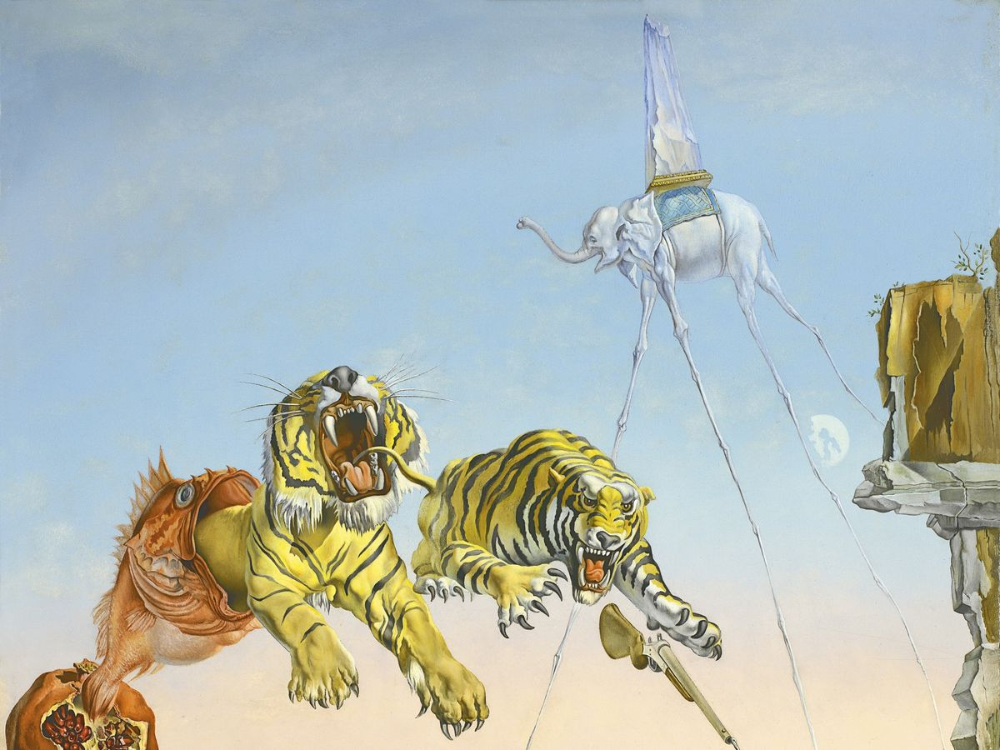
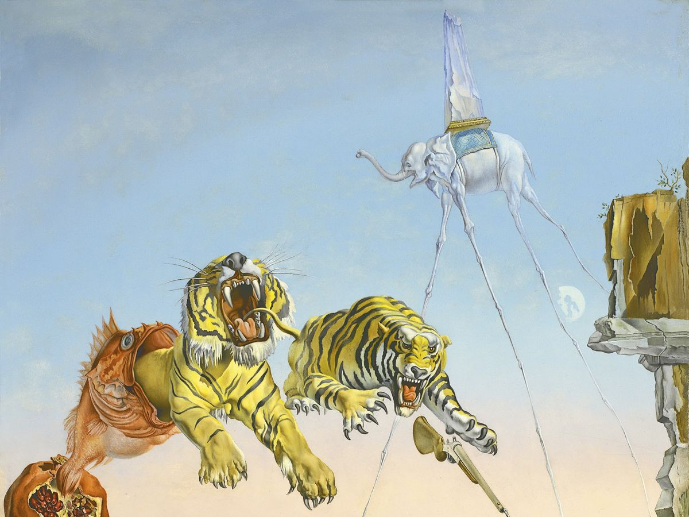

Dalì
Salvador Dalí, marchese di Púbol, all'anagrafe Salvador Domingo Felipe Jacinto Dalí (11 maggio 1904, 23 gennaio 1989), è stato un pittore, scultore, scrittore, fotografo, cineasta, designer, sceneggiatore e mistico spagnolo. Abile pittore e virtuosissimo disegnatore, è celebre principalmente per le immagini suggestive e bizzarre delle sue opere surrealiste e dadaiste. Il suo peculiare tocco fu attribuito all'influenza che ebbero su di lui i maestri del Rinascimento.
 

 home
home